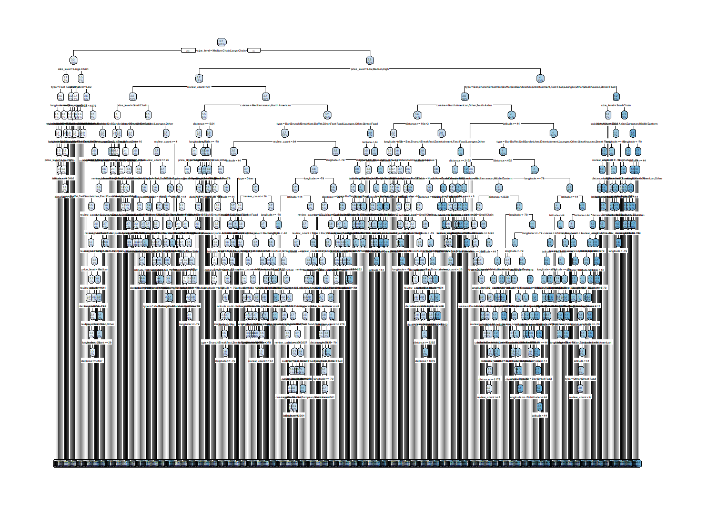
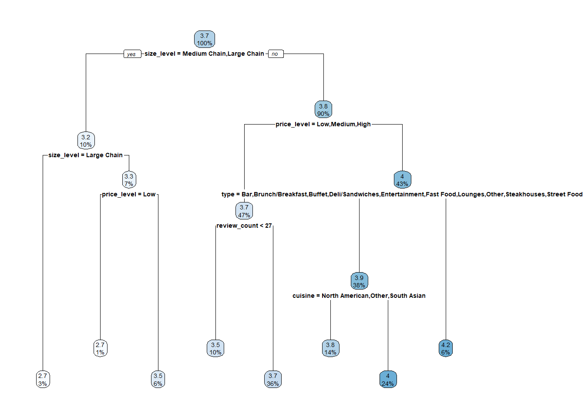
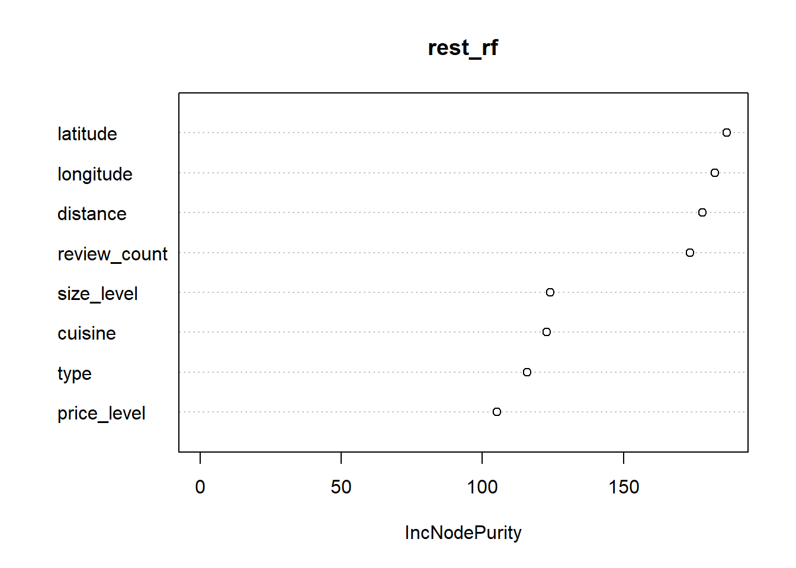
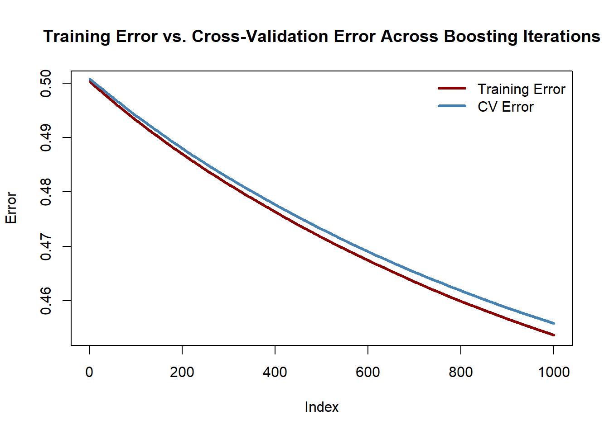
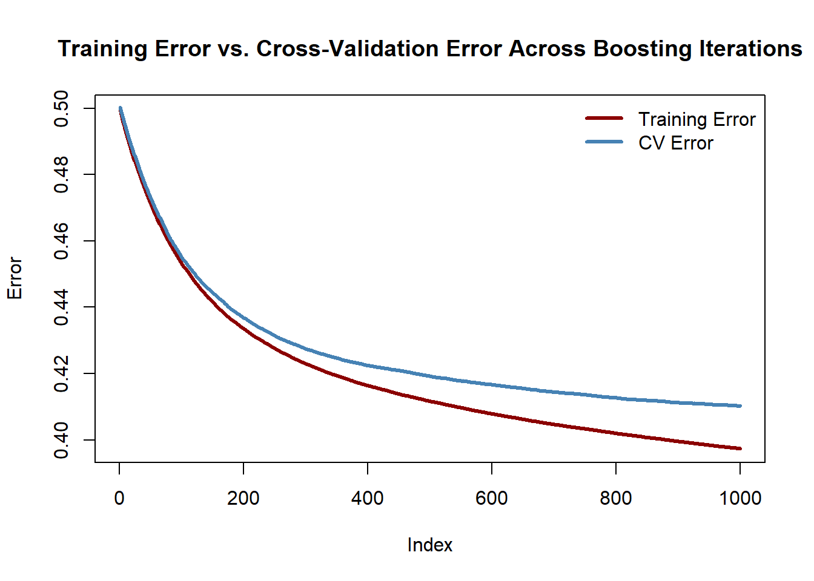
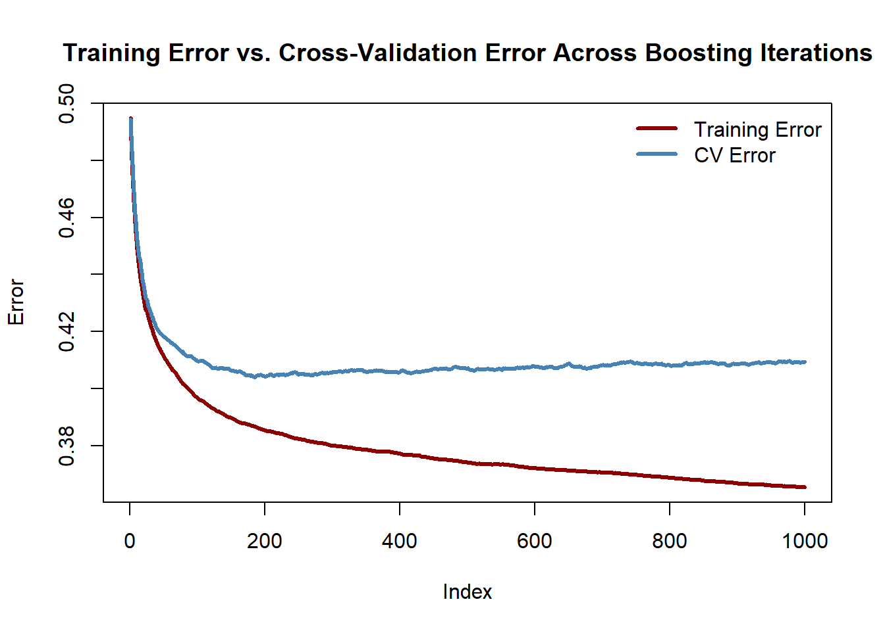
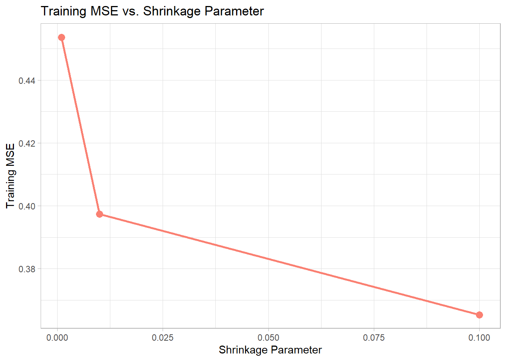
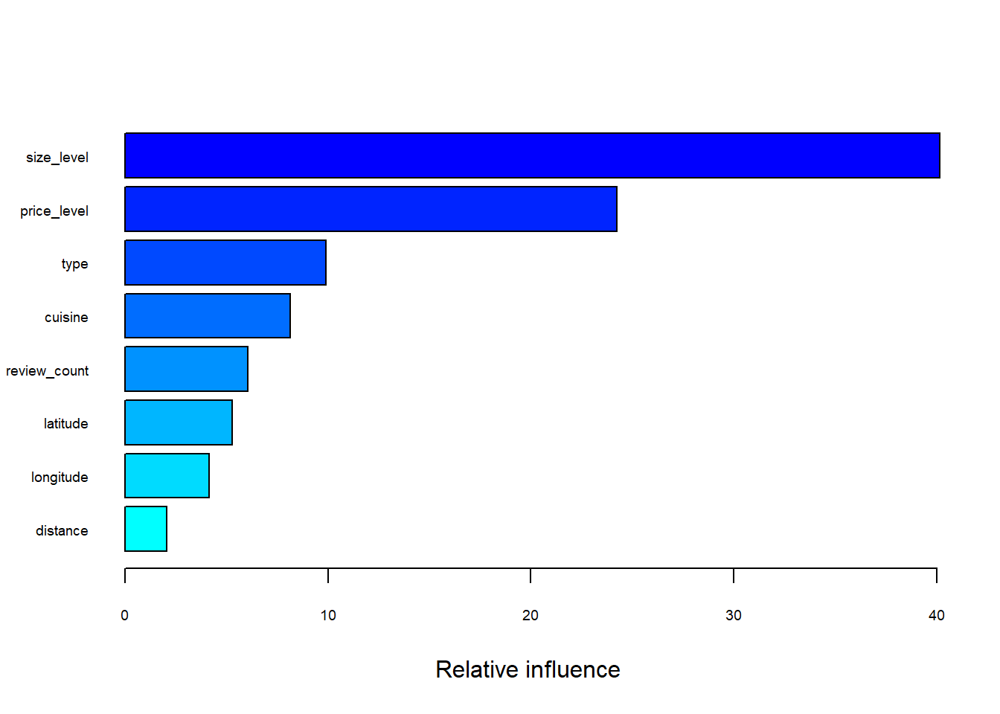
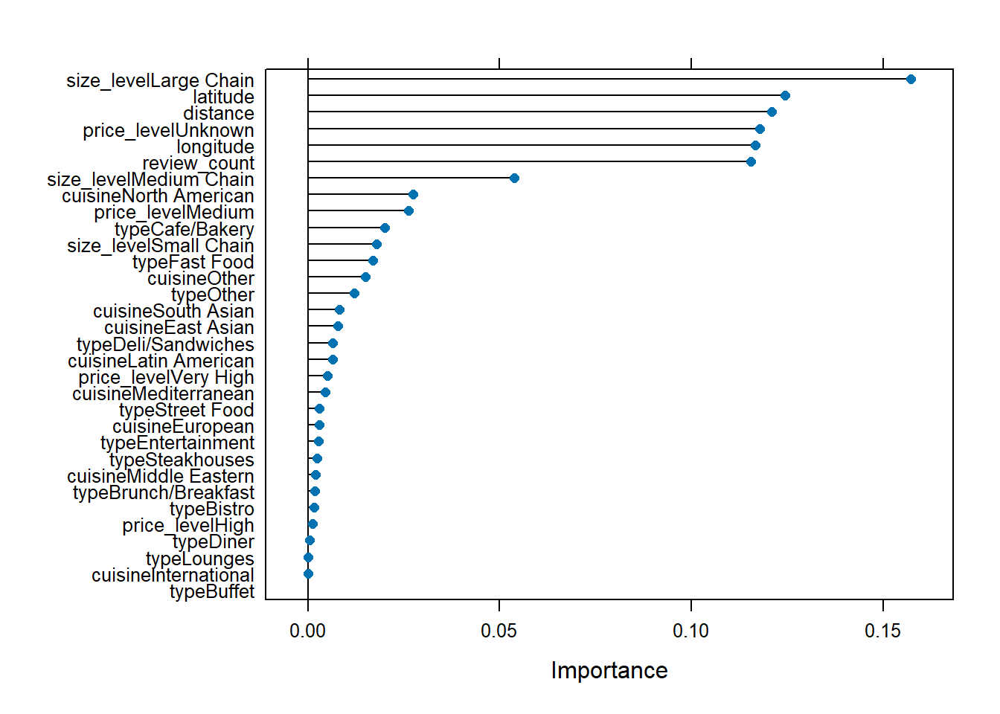

##
## Call:
## lm(formula = rating ~ distance + longitude + latitude + price_level +
## review_count + type + cuisine + size_level, data = rest_train)
##
## Residuals:
## Min 1Q Median 3Q Max
## -2.8478 -0.3408 0.0759 0.4353 2.0788
##
## Coefficients:
## Estimate Std. Error t value Pr(>|t|)
## (Intercept) 1.198e+01 3.120e+01 0.384 0.70097
## distance 2.742e-06 4.484e-06 0.612 0.54083
## longitude -5.492e-02 2.016e-01 -0.272 0.78533
## latitude -2.904e-01 5.387e-01 -0.539 0.58991
## price_levelMedium 3.007e-02 3.943e-02 0.763 0.44573
## price_levelHigh 1.217e-01 6.545e-02 1.859 0.06311 .
## price_levelVery High 4.065e-01 1.242e-01 3.272 0.00108 **
## price_levelUnknown 3.821e-01 3.759e-02 10.164 < 2e-16 ***
## review_count 4.890e-04 9.222e-05 5.303 1.23e-07 ***
## typeBistro 4.595e-01 2.055e-01 2.237 0.02540 *
## typeBrunch/Breakfast 6.854e-02 7.024e-02 0.976 0.32924
## typeBuffet 9.220e-02 2.443e-01 0.377 0.70590
## typeCafe/Bakery 2.482e-01 4.942e-02 5.023 5.42e-07 ***
## typeDeli/Sandwiches 2.020e-01 7.113e-02 2.839 0.00456 **
## typeDiner -2.651e-02 1.545e-01 -0.172 0.86376
## typeEntertainment -6.254e-01 2.878e-01 -2.173 0.02986 *
## typeFast Food -6.472e-02 6.344e-02 -1.020 0.30773
## typeLounges -1.754e-01 2.156e-01 -0.814 0.41587
## typeOther -2.347e-02 3.431e-02 -0.684 0.49399
## typeSteakhouses -7.264e-02 1.250e-01 -0.581 0.56115
## typeStreet Food 8.836e-02 5.139e-02 1.720 0.08562 .
## cuisineEast Asian -4.365e-02 1.161e-01 -0.376 0.70706
## cuisineEuropean -8.117e-02 1.196e-01 -0.679 0.49744
## cuisineInternational 4.685e-01 4.656e-01 1.006 0.31444
## cuisineLatin American -4.330e-03 1.209e-01 -0.036 0.97142
## cuisineMediterranean -1.099e-01 1.284e-01 -0.855 0.39240
## cuisineMiddle Eastern -3.320e-02 1.259e-01 -0.264 0.79201
## cuisineNorth American -3.240e-01 1.220e-01 -2.655 0.00799 **
## cuisineOther -1.488e-01 1.170e-01 -1.272 0.20346
## cuisineSouth Asian -2.197e-01 1.287e-01 -1.707 0.08791 .
## size_levelSmall Chain -2.081e-01 3.788e-02 -5.495 4.26e-08 ***
## size_levelMedium Chain -4.333e-01 4.934e-02 -8.782 < 2e-16 ***
## size_levelLarge Chain -9.208e-01 8.029e-02 -11.469 < 2e-16 ***
## ---
## Signif. codes: 0 '***' 0.001 '**' 0.01 '*' 0.05 '.' 0.1 ' ' 1
##
## Residual standard error: 0.638 on 2757 degrees of freedom
## Multiple R-squared: 0.1963, Adjusted R-squared: 0.187
## F-statistic: 21.04 on 32 and 2757 DF, p-value: < 2.2e-16## [1] 0.6342034## GVIF Df GVIF^(1/(2*Df))
## distance 3.326406 1 1.823844
## longitude 1.113747 1 1.055342
## latitude 3.424549 1 1.850554
## price_level 1.456110 4 1.048092
## review_count 1.262268 1 1.123507
## type 2.276772 12 1.034876
## cuisine 1.955910 9 1.037973
## size_level 1.351796 3 1.051522## Start: AIC=-2475.05
## rating ~ distance + longitude + latitude + price_level + review_count +
## type + cuisine + size_level
##
## Df Sum of Sq RSS AIC
## - longitude 1 0.030 1122.2 -2477.0
## - latitude 1 0.118 1122.3 -2476.8
## - distance 1 0.152 1122.3 -2476.7
## <none> 1122.2 -2475.1
## - review_count 1 11.446 1133.6 -2448.7
## - cuisine 9 19.331 1141.5 -2445.4
## - type 12 23.538 1145.7 -2441.1
## - price_level 4 75.694 1197.9 -2300.9
## - size_level 3 79.902 1202.1 -2289.2
##
## Step: AIC=-2476.98
## rating ~ distance + latitude + price_level + review_count + type +
## cuisine + size_level
##
## Df Sum of Sq RSS AIC
## - latitude 1 0.153 1122.4 -2478.6
## - distance 1 0.165 1122.4 -2478.6
## <none> 1122.2 -2477.0
## + longitude 1 0.030 1122.2 -2475.1
## - review_count 1 11.428 1133.6 -2450.7
## - cuisine 9 19.499 1141.7 -2446.9
## - type 12 23.608 1145.8 -2442.9
## - price_level 4 75.665 1197.9 -2302.9
## - size_level 3 79.917 1202.1 -2291.0
##
## Step: AIC=-2478.6
## rating ~ distance + price_level + review_count + type + cuisine +
## size_level
##
## Df Sum of Sq RSS AIC
## - distance 1 0.022 1122.4 -2480.5
## <none> 1122.4 -2478.6
## + latitude 1 0.153 1122.2 -2477.0
## + longitude 1 0.065 1122.3 -2476.8
## - review_count 1 11.407 1133.8 -2452.4
## - cuisine 9 19.349 1141.7 -2448.9
## - type 12 23.567 1145.9 -2444.6
## - price_level 4 75.552 1197.9 -2304.8
## - size_level 3 79.867 1202.2 -2292.8
##
## Step: AIC=-2480.54
## rating ~ price_level + review_count + type + cuisine + size_level
##
## Df Sum of Sq RSS AIC
## <none> 1122.4 -2480.5
## + longitude 1 0.051 1122.3 -2478.7
## + distance 1 0.022 1122.4 -2478.6
## + latitude 1 0.011 1122.4 -2478.6
## - review_count 1 11.441 1133.8 -2454.2
## - cuisine 9 19.328 1141.7 -2450.9
## - type 12 23.555 1145.9 -2446.6
## - price_level 4 75.808 1198.2 -2306.2
## - size_level 3 79.851 1202.2 -2294.8##
## Call:
## lm(formula = rating ~ price_level + review_count + type + cuisine +
## size_level, data = rest_train)
##
## Coefficients:
## (Intercept) price_levelMedium price_levelHigh
## 3.682706 0.030395 0.120773
## price_levelVery High price_levelUnknown review_count
## 0.405865 0.381257 0.000484
## typeBistro typeBrunch/Breakfast typeBuffet
## 0.458165 0.068783 0.095864
## typeCafe/Bakery typeDeli/Sandwiches typeDiner
## 0.247898 0.201445 -0.028676
## typeEntertainment typeFast Food typeLounges
## -0.627624 -0.064292 -0.176608
## typeOther typeSteakhouses typeStreet Food
## -0.023333 -0.069118 0.088574
## cuisineEast Asian cuisineEuropean cuisineInternational
## -0.049627 -0.085127 0.460309
## cuisineLatin American cuisineMediterranean cuisineMiddle Eastern
## -0.009126 -0.114702 -0.038549
## cuisineNorth American cuisineOther cuisineSouth Asian
## -0.327240 -0.153315 -0.222136
## size_levelSmall Chain size_levelMedium Chain size_levelLarge Chain
## -0.208013 -0.433146 -0.920059##
## Call:
## lm(formula = rating ~ price_level + review_count + type + cuisine +
## size_level, data = rest_train)
##
## Residuals:
## Min 1Q Median 3Q Max
## -2.84781 -0.34427 0.07441 0.43660 2.07225
##
## Coefficients:
## Estimate Std. Error t value Pr(>|t|)
## (Intercept) 3.683e+00 1.224e-01 30.081 < 2e-16 ***
## price_levelMedium 3.040e-02 3.939e-02 0.772 0.44044
## price_levelHigh 1.208e-01 6.540e-02 1.847 0.06491 .
## price_levelVery High 4.059e-01 1.241e-01 3.269 0.00109 **
## price_levelUnknown 3.813e-01 3.753e-02 10.157 < 2e-16 ***
## review_count 4.840e-04 9.125e-05 5.304 1.22e-07 ***
## typeBistro 4.582e-01 2.053e-01 2.232 0.02570 *
## typeBrunch/Breakfast 6.878e-02 7.016e-02 0.980 0.32700
## typeBuffet 9.586e-02 2.439e-01 0.393 0.69433
## typeCafe/Bakery 2.479e-01 4.935e-02 5.023 5.40e-07 ***
## typeDeli/Sandwiches 2.014e-01 7.102e-02 2.837 0.00459 **
## typeDiner -2.868e-02 1.542e-01 -0.186 0.85247
## typeEntertainment -6.276e-01 2.876e-01 -2.182 0.02917 *
## typeFast Food -6.429e-02 6.334e-02 -1.015 0.31016
## typeLounges -1.766e-01 2.155e-01 -0.820 0.41245
## typeOther -2.333e-02 3.418e-02 -0.683 0.49485
## typeSteakhouses -6.912e-02 1.244e-01 -0.556 0.57856
## typeStreet Food 8.857e-02 5.134e-02 1.725 0.08459 .
## cuisineEast Asian -4.963e-02 1.158e-01 -0.429 0.66819
## cuisineEuropean -8.513e-02 1.193e-01 -0.714 0.47549
## cuisineInternational 4.603e-01 4.651e-01 0.990 0.32239
## cuisineLatin American -9.126e-03 1.205e-01 -0.076 0.93963
## cuisineMediterranean -1.147e-01 1.281e-01 -0.896 0.37051
## cuisineMiddle Eastern -3.855e-02 1.256e-01 -0.307 0.75895
## cuisineNorth American -3.272e-01 1.218e-01 -2.687 0.00726 **
## cuisineOther -1.533e-01 1.166e-01 -1.315 0.18862
## cuisineSouth Asian -2.221e-01 1.283e-01 -1.732 0.08344 .
## size_levelSmall Chain -2.080e-01 3.784e-02 -5.497 4.21e-08 ***
## size_levelMedium Chain -4.331e-01 4.930e-02 -8.786 < 2e-16 ***
## size_levelLarge Chain -9.201e-01 8.024e-02 -11.467 < 2e-16 ***
## ---
## Signif. codes: 0 '***' 0.001 '**' 0.01 '*' 0.05 '.' 0.1 ' ' 1
##
## Residual standard error: 0.6377 on 2760 degrees of freedom
## Multiple R-squared: 0.1961, Adjusted R-squared: 0.1877
## F-statistic: 23.22 on 29 and 2760 DF, p-value: < 2.2e-16## [1] 0.6342615##
## Family: gaussian
## Link function: identity
##
## Formula:
## rating ~ distance + longitude + latitude + price_level + review_count +
## type + cuisine + size_level + s(neighbourhood, bs = "re")
##
## Parametric coefficients:
## Estimate Std. Error t value Pr(>|t|)
## (Intercept) 2.909e+01 3.918e+01 0.743 0.457830
## distance 1.788e-06 5.895e-06 0.303 0.761622
## longitude 9.504e-03 2.538e-01 0.037 0.970135
## latitude -5.652e-01 6.819e-01 -0.829 0.407268
## price_levelMedium 3.075e-02 3.927e-02 0.783 0.433685
## price_levelHigh 1.247e-01 6.510e-02 1.916 0.055455 .
## price_levelVery High 4.144e-01 1.233e-01 3.361 0.000787 ***
## price_levelUnknown 3.828e-01 3.739e-02 10.237 < 2e-16 ***
## review_count 5.170e-04 9.179e-05 5.632 1.96e-08 ***
## typeBistro 4.136e-01 2.034e-01 2.034 0.042075 *
## typeBrunch/Breakfast 6.216e-02 6.978e-02 0.891 0.373073
## typeBuffet 1.619e-01 2.419e-01 0.669 0.503491
## typeCafe/Bakery 2.463e-01 4.906e-02 5.021 5.48e-07 ***
## typeDeli/Sandwiches 2.045e-01 7.050e-02 2.900 0.003761 **
## typeDiner -4.945e-02 1.537e-01 -0.322 0.747661
## typeEntertainment -5.295e-01 2.851e-01 -1.857 0.063369 .
## typeFast Food -5.642e-02 6.305e-02 -0.895 0.370936
## typeLounges -1.542e-01 2.139e-01 -0.721 0.471080
## typeOther -2.401e-02 3.413e-02 -0.703 0.481815
## typeSteakhouses -4.946e-02 1.239e-01 -0.399 0.689751
## typeStreet Food 7.841e-02 5.095e-02 1.539 0.123884
## cuisineEast Asian -1.558e-02 1.169e-01 -0.133 0.894007
## cuisineEuropean -7.357e-02 1.203e-01 -0.612 0.540860
## cuisineInternational 5.215e-01 4.609e-01 1.131 0.257950
## cuisineLatin American -2.517e-03 1.213e-01 -0.021 0.983452
## cuisineMediterranean -8.525e-02 1.290e-01 -0.661 0.508681
## cuisineMiddle Eastern -2.788e-02 1.265e-01 -0.220 0.825633
## cuisineNorth American -2.689e-01 1.227e-01 -2.193 0.028414 *
## cuisineOther -1.194e-01 1.178e-01 -1.014 0.310592
## cuisineSouth Asian -1.824e-01 1.292e-01 -1.413 0.157911
## size_levelSmall Chain -1.949e-01 3.766e-02 -5.176 2.43e-07 ***
## size_levelMedium Chain -4.136e-01 4.910e-02 -8.422 < 2e-16 ***
## size_levelLarge Chain -9.114e-01 7.980e-02 -11.422 < 2e-16 ***
## ---
## Signif. codes: 0 '***' 0.001 '**' 0.01 '*' 0.05 '.' 0.1 ' ' 1
##
## Approximate significance of smooth terms:
## edf Ref.df F p-value
## s(neighbourhood) 41.43 141 0.636 <2e-16 ***
## ---
## Signif. codes: 0 '***' 0.001 '**' 0.01 '*' 0.05 '.' 0.1 ' ' 1
##
## R-sq.(adj) = 0.213 Deviance explained = 23.3%
## GCV = 0.40493 Scale est. = 0.39413 n = 2790## [1] 0.619364







## var rel.inf
## size_level size_level 40.152309
## price_level price_level 24.249733
## type type 9.910764
## cuisine cuisine 8.158130
## review_count review_count 6.040770
## latitude latitude 5.280080
## longitude longitude 4.144137
## distance distance 2.064077## nrounds max_depth eta gamma colsample_bytree min_child_weight subsample
## 30 500 5 0.01 0 0.6 1 1
| Method | Train.RMSE | Test.RMSE |
|---|---|---|
| Linear Regression | 0.766 | 0.634 |
| Auto Lin Reg | 0.766 | 0.634 |
| GLMM | 0.770 | 0.630 |
| Regression Tree | 0.763 | 0.633 |
| Random Forest | 0.832 | 0.635 |
| Boosting | 0.748 | 0.630 |
| XGBoost | 0.773 | 0.630 |